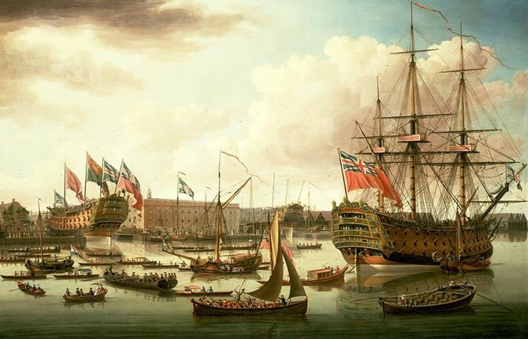

Новий час — це період в історії, що починається приблизно в XV столітті і триває до кінця XVIII століття, відзначаючи значні зміни в політичній, економічній та культурній сферах. Цей етап характеризується початком епохи Відродження, що сприяло відновленню інтересу до античності, науки та мистецтва. Новий час також відзначений великими географічними відкриттями, які змінили уявлення про світ і сприяли колонізації нових земель. Важливими подіями є Реформація, що призвела до виникнення протестантизму та зміни в релігійному ландшафті Європи, а також Просвітництво, що акцентувало увагу на розумі, науці та індивідуальних правах. Технологічні інновації, такі як друкарський верстат, відіграли важливу роль у поширенні знань. Період закінчується наприкінці XVIII століття, зокрема з Французькою революцією, що знаменувала собою перехід до нових форм політичної організації та соціальних змін.
Основні події епохи Нового часу
Ярош Антон
Ключові моменти Нового часу:
- Великі географічні відкриття.
- Наукова революція.
- Війни за незалежність і революції.
- Реформація та виникнення протестантизму.
- Виникнення абсолютизму та розвиток монархій.
- Зростання капіталізму і розвиток торгових відносин.
- Поява університетів та нових наукових дисциплін.
- Формування сучасних націй та національних держав.
- Технологічні інновації, такі як друкарський верстат та механізми.

Цікаві факти:
- Заснування колоній і відкриття нових континентів.
- Промислова революція змінила економіку та суспільство.
- Епоха Просвітництва започаткувала розвиток демократії та прав людини.
- Коперникова геліоцентрична теорія змінила уявлення про всесвіт.
- Винахід друкарського верстата сприяв розповсюдженню книг і знань.
- Астрономічні відкриття Галилея та Ньютона заклали основи сучасної фізики.
- Відкриття Нового світу призвело до глобальної торгівлі та обміну культур.
- Французька революція стала символом боротьби за свободу і рівність.
- Виникнення перших політичних партій та рухів.